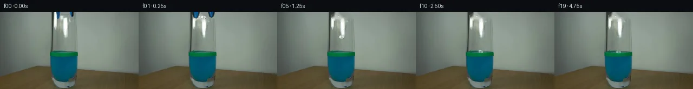
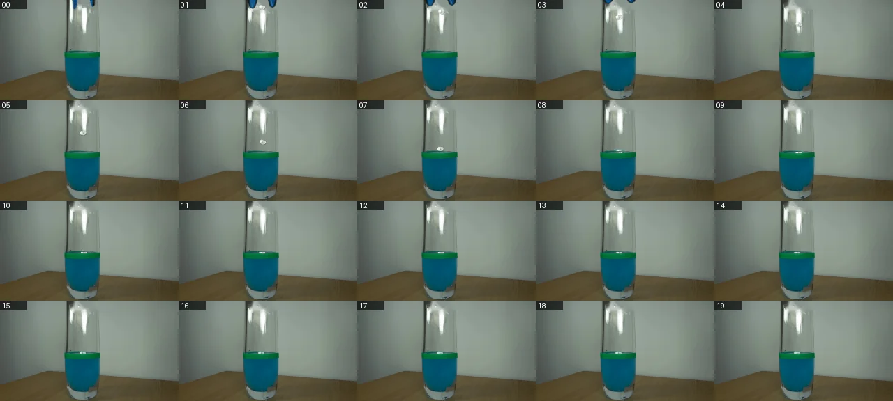
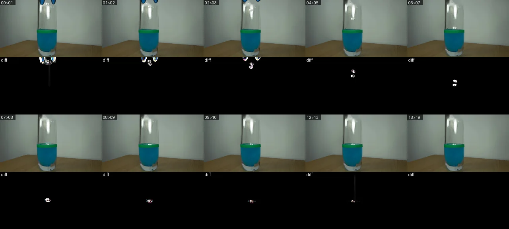

V0 · 初版 · 最终提交
![]()
Observable Generation Trace
把最终像素视频、Harness 冻结的每轮候选、真实工具事件和 Agent 自述放在同一页。可观测证据与模型自述分开标记，避免把“模型说它检查过”误当成真实工具调用。
![首帧]()
Static locked-off single-shot with fixed frame throughout filmed with constant framerate in real-time. The scene shows a realistic scientific demonstration. The scene only contains the described setup and actions. The blue-black grabber tool was holding the small crumpled piece of paper at the inner rim of the glass containing the blue liquid and the green water level marking. The blue-black grabber releases the small crumpled piece of paper into the glass containing blue liquid with a green band marking the water level.
首帧显示在左侧播放器初始画面。Track 权限、隔离和 tensor 一致性来自 run manifest，而不是 METHOD.md。
默认勾选初版和最终版；可选其他版本一起同步播放。仅检查图更新的连续重复快照已合并，回退旧视频仍保留为一次修订。
Observable events
来源：events.jsonl + run manifest
视觉工具可用，但 events.jsonl 没有记录到成功的输出 PNG 读取；存在 self-refine 候选，不等于存在可验证的视觉 self-refine。
Frozen candidates
每张图来自该 round 的真实 00 / 01 / 05 / 10 / 19 帧

pixels 59193b7a2b6c0e8c · code ddeffc39c51079d9
--- previous/generate.py
+++ current/generate.py
@@ -0,0 +1,321 @@
+#!/usr/bin/env python3
+"""Generate the 20-frame locked-camera paper-release sequence.
+
+All scene information comes from first_frame.png. The animation is made with
+local deterministic pixel operations (OpenCV inpainting and Pillow drawing).
+"""
+
+from __future__ import annotations
+
+import math
+import shutil
+from pathlib import Path
+
+import cv2
+import numpy as np
+from PIL import Image, ImageDraw, ImageFilter, ImageFont
+
+
+ROOT = Path(__file__).resolve().parent
+SOURCE = ROOT / "first_frame.png"
+FRAME_DIR = ROOT / "frames"
+W, H = 256, 144
+N_FRAMES = 20
+FPS = 4
+SS = 4
+
+
+def clean_plate(source: np.ndarray) -> np.ndarray:
+ """Remove only the original top-cropped tool and held paper."""
+ mask = np.zeros((H, W), np.uint8)
+ cv2.fillPoly(
+ mask,
+ [
+ np.array([(100, 0), (116, 0), (115, 6), (113, 12), (109, 16), (104, 14), (101, 9)], np.int32),
+ np.array([(126, 0), (142, 0), (141, 8), (138, 13), (133, 13), (129, 9)], np.int32),
+ np.array([(110, 4), (128, 4), (130, 13), (125, 18), (114, 17), (109, 11)], np.int32),
+ ],
+ 255,
+ )
+ mask = cv2.dilate(mask, np.ones((3, 3), np.uint8), iterations=1)
+ # TELEA works well here because the masked region is small and surrounded
+ # by smooth, vertical glass reflections.
+ return cv2.inpaint(source, mask, 4, cv2.INPAINT_TELEA)
+
+
+def rgba_layer() -> Image.Image:
+ return Image.new("RGBA", (W * SS, H * SS), (0, 0, 0, 0))
+
+
+def downsample_layer(layer: Image.Image) -> Image.Image:
+ return layer.resize((W, H), Image.Resampling.LANCZOS)
+
+
+def scaled_points(points):
+ return [(round(x * SS), round(y * SS)) for x, y in points]
+
+
+def add_grabber(base: Image.Image, frame_idx: int) -> Image.Image:
+ """Render the blue-black rubber tips opening and leaving upward."""
+ if frame_idx > 3:
+ return base
+ # Frame 1 starts open; subsequent frames withdraw. Frame 0 is never passed.
+ states = {
+ 1: (-0.8, 0.0, 11.5, 10.0),
+ 2: (-2.1, -1.0, 8.0, 7.0),
+ 3: (-3.0, -2.0, 4.5, 3.8),
+ }
+ outward, rise, left_bottom, right_bottom = states[frame_idx]
+ layer = rgba_layer()
+ d = ImageDraw.Draw(layer)
+
+ lx = 107 + outward
+ rx = 133 - outward
+ # Soft dark perimeter, then a saturated blue rubber inset. Both are kept
+ # cropped by the top edge just like the source.
+ left_outer = [(lx - 7, -3), (lx + 7, -3), (lx + 6, 3 + rise),
+ (lx + 3, left_bottom - 1), (lx, left_bottom + 1),
+ (lx - 4, left_bottom - 1), (lx - 6, 4 + rise)]
+ right_outer = [(rx - 7, -3), (rx + 7, -3), (rx + 6, 4 + rise),
+ (rx + 4, right_bottom - 1), (rx + 1, right_bottom + 1),
+ (rx - 3, right_bottom - 1), (rx - 5, 2 + rise)]
+ d.polygon(scaled_points(left_outer), fill=(9, 28, 35, 225))
+ d.polygon(scaled_points(right_outer), fill=(7, 23, 30, 235))
+ left_inner = [(lx - 4.6, -2), (lx + 4, -2), (lx + 3.5, 3 + rise),
+ (lx + 1.4, left_bottom - .6), (lx - 1.1, left_bottom),
+ (lx - 3.4, left_bottom - 2), (lx - 4.2, 3 + rise)]
+ right_inner = [(rx - 4.2, -2), (rx + 3.9, -2), (rx + 3.4, 3 + rise),
… diff truncated; 234 more lines …pixels 59193b7a2b6c0e8c · code 8b6f5b9bdecbe00a
--- previous/generate.py
+++ current/generate.py
@@ -13,7 +13,7 @@
import cv2
import numpy as np
-from PIL import Image, ImageDraw, ImageFilter, ImageFont
+from PIL import Image, ImageDraw, ImageFilter
ROOT = Path(__file__).resolve().parent
@@ -210,7 +210,7 @@
overlay = np.zeros((H, W, 4), np.uint8)
overlay[band, :3] = arr[band]
overlay[band, 3] = 218
- out = Image.alpha_composite(image.convert("RGBA"), Image.fromarray(overlay, "RGBA"))
+ out = Image.alpha_composite(image.convert("RGBA"), Image.fromarray(overlay))
# A narrow translucent reflection crosses anything within the vessel.
if 1 <= frame_idx <= 12:
@@ -227,7 +227,7 @@
if src_img.size != (W, H):
raise ValueError(f"first_frame.png must be {W}x{H}, got {src_img.size}")
source = np.asarray(src_img)
- clean = Image.fromarray(clean_plate(source), "RGB")
+ clean = Image.fromarray(clean_plate(source))
FRAME_DIR.mkdir(exist_ok=True)
frames = []
@@ -285,7 +285,7 @@
a = np.asarray(frames[i - 1], dtype=np.int16)
b = np.asarray(frames[i], dtype=np.int16)
diff = np.clip(np.abs(a - b) * 5, 0, 255).astype(np.uint8)
- sheet.paste(Image.fromarray(diff, "RGB"), (x, y + H))
+ sheet.paste(Image.fromarray(diff), (x, y + H))
label(d, (x, y), f"{i-1:02d}>{i:02d}")
label(d, (x, y + H), "diff")
sheet.save(ROOT / "transition_check.png")Final visual checks
Harness 保存的最终产物


Agent claims
以下文字由生成 Agent 撰写，不等同于工具证据
(0, 123), rises toward (72, 101), passes behind the glass, and continues near y=111 at the right edge.x=118; its visible outer silhouette is approximately x=93..143, extending beyond the top edge and down to y=143. The rounded base occupies roughly x=101..136, y=128..143.x=92..143, y=74..82, with a curved upper edge. The blue liquid begins at the marked level and fills the lower glass.x=97..141, y=80..130, darkening toward its center and lower half while keeping glass highlights at the sides.x=103..113, the right near x=128..138; both are partly outside the frame.x=113..126, y=5..15. Its value is close to the bright glass reflection, so the folded gray facets are important for readability.x=115..128 and a narrower side highlight. No camera or environmental motion is present.| Frame | Time | Planned action |
|---|---|---|
| 00 | 0.00 s | Exact supplied first frame: paper pinched at the cropped inner rim. |
| 01 | 0.25 s | Grabber tips part slightly; paper is just released and remains almost stationary for an instant. |
| 02 | 0.50 s | Tips retract upward/outward; paper starts a slow, slightly rightward fall. |
| 03 | 0.75 s | Paper descends through the empty upper glass and begins to tumble. |
| 04 | 1.00 s | Grabber is nearly out of frame; paper continues down with increased speed. |
| 05 | 1.25 s | Paper tumbles through mid-glass, its folds changing orientation. |
| 06 | 1.50 s | Paper approaches the marked liquid level; no premature liquid response. |
| 07 | 1.75 s | Paper is immediately above the surface, with a tiny reflected glint below it. |
| 08 | 2.00 s | First contact: paper compresses at the surface; a restrained crown/splash appears. |
| 09 | 2.25 s | Paper dips partly behind the green band; two small droplets fall back and the first ripple expands. |
| 10 | 2.50 s | Damp paper rebounds to float partly above the surface; ripple widens. |
| 11 | 2.75 s | A smaller secondary bob and ripple follow; splash droplets are gone. |
| 12 | 3.00 s | Paper rotates slightly and settles lower as it wets; surface oscillation weakens. |
| 13 | 3.25 s | Low-amplitude ripple continues; paper remains caught at the surface. |
| 14 | 3.50 s | Paper drifts about one pixel left while bobbing minimally. |
| 15 | 3.75 s | Ripple fades to a thin curved highlight; paper darkens subtly from absorbed blue liquid. |
| 16 | 4.00 s | Nearly settled floating paper, still partly obscured by the green marking. |
| 17 | 4.25 s | Only a minute residual surface shimmer remains. |
| 18 | 4.50 s | Paper is stationary at the marked level; liquid is calm. |
| 19 | 4.75 s | Final calm state with the released, damp crumple floating at the surface. |
Only the grabber, paper, and physically consequent liquid disturbance change. The camera, glass, green marker, table, wall, exposure, and shadows stay locked.
The sequence is generated entirely from first_frame.png with deterministic local pixel operations in generate.py.
(20, 144, 256) uint32 array as 0xRRGGBB and written to pixels.npz under key pixels.inspection.png is the full 4-by-5 contact sheet. transition_check.png pairs selected later frames with 5x-amplified absolute differences from their predecessors. The generator finishes with exact frame-00, dimensions, dtype, and PNG-versus-tensor assertions.